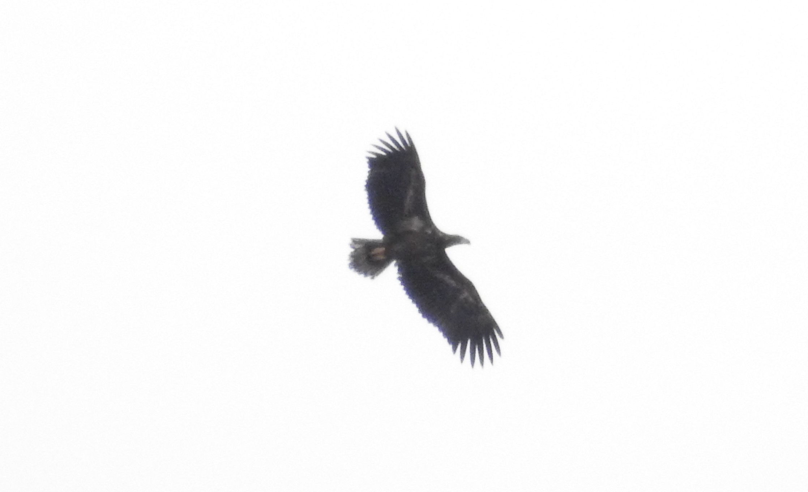

沼１
沼１の記録
2020.12.02 トモエガモ発見とコチョウゲンボウ
オンライン（オンデマンド）授業は学生に自由な時間を与える。既にアップロードが済んでいる講義は受講して、まだ済んでいない講義は後の自分に任せてマイフィールドの沼に出かけた。
午後2:30ほど、大量のオナガガモの中にトモエガモを見つけた。野鳥観察を本格的に行うようになって時間が経っていないが、「すごいバーダー」の目標として個人的に考えていた「マイフィールド双眼鏡トモエ探し」ができた。初めて見るトモエガモオス。ホルスの目みたいでかっこいい。
そんなことを考えていたら、沼に隣接する電柱にホルスが止まっていた。先日同じ場所で発見していたコチョウゲンボウ。実はチョウゲンボウを見たことが泣く、発見当時は「チョウゲンボウ見つけました」って仲間に報告していたら、コチョですよと指摘をいただいた。電柱のコチョを見ていると、サークルの同期がやってきたので一緒に見た。チョゲとの違いとして「小鳥も襲う」、「一気に加速して群れに突っ込む狩りをする」など教えてもらった。
{kind=link}
{kind=link}
2021.12.29 オジロワシ遠い
初見はトビだと思ったけど、双眼鏡でよく見てると尾羽の形や翼の幅が違いすぎて「！？」ってなった。フィールドで出たことがある、と聞いたことはあったけど、都市伝説として気に留めていなかったので非常に驚いた。 かなりの高所を旋回して西側に向かっていった。遠ざかる猛禽あるあるの「真っ平らな円盤がどんどん小さくなっていく」のを見ながら、もっと早く到着していれば・気付いていれば…という気持ちになった。この日以来、このフィールドでワシを見ていない。
{width = “100%”}
2022.02.18～03.24 アカツクシガモと出会った
研究室配属学生にとって大学の春休みはないようなものだが、ハクチョウを見に行った。研究が行き詰まってて気分の切り替えをするつもりだった。 午前10:20、沼の周りの田んぼの中、白いつぶつぶを遠くに見つけて近づいてみる。ハクチョウは表情豊かで観察がとても楽しい。
ハクチョウの中に何やらオレンジ色の物体が置いてあった。珍鳥を見つけるとかなり興奮するのだが、研究でメンタルが死んでいたことに加え、「福島あたりで見つかった」ことがブログに書いてあったので、そこまで驚かなかった。
午前10:40、寝ていたオレンジはゆっくり首を上げた。想像通りのアカツクシガモだった。ハクチョウの群れの中に1羽混ざっており、しきりに採餌していた。たまにハシボソガラスにちょっかいをかけられてとことこ逃げたり、ハクチョウのように水たまりで飲水して膨張したりしていた。大きさや行動がカモと言うよりガンに近く、首の太さやもこもこ具合がアルパカやわんこみたいで、とても面白い。 私の他に観察者は一人だけだったが、有名ポイントであることに加え発見がしやすい。なるべく広まって欲しくないなぁと思いながら、昼過ぎから仕事があるので一度帰宅した。
仕事を終えてもう一度現場に向かうと、サークルの仲間が見に来ていた。どうやら私とは独立に発見していたらしい。日が暮れるまで仲間と観察を続けた。その後もサークル仲間と車を出す機会がある際は寄るようにした。
アカツクシガモは終認の03.24までハクチョウたちと行動を共にし、多くの人々が観察する機会に恵まれた。農道にずらりと並んだ車と通り抜けに難儀する一般車両、ハクチョウが逃げるのも構わず田畑の畦に侵入して撮影するヒト、Youtubeに動画がアップロードされているのを見つけたりして、人嫌いに拍車がかかった。一方で穏やかな顔（？）でのんびり過ごしているアカツクシガモのかわいらしさや雰囲気に救われたし、サークルの仲間と一緒に観察できたのは嬉しかった。
{kind=link}
{kind=link}
2022.10.10
尾羽ふりふりチョウゲンボウしかいない。沼から離れて畑に向かうと、群れるシラサギ軍団の中にやたら小さいチュウサギがいるのが目についた。いつもなら素通りするはずだが、この時はやけに気にかかったのだろう（正直、そのあとの興奮で覚えていない…）、路駐して確認すると、
l 赤い嘴 l ややオレンジがかった羽衣
が認められる。どうやら先ほどのジズは間違いなかったようで、ここでアマサギライファーとなった。
ちっさいが他のシラサギと同様の採餌で、畦をとことこ歩いている。他の車両の迷惑になるため、一度しっかり寄せるためにあれこれしていると飛ばれてしまった…飛んだ先はどうやら沼を囲う柵の上で、他のシラサギ20羽程度と混ざって寛いでいた。夢中でシャッターを押してて、気付いたら別の人も撮影しているようだった。遠いのとあいにくの暗さの為にISOや露光調整でガビガビになっているのが悲しい。それからはお腹も空いていたので、たくさん観察、撮影させていただいたことへの感謝を思いながら帰路についた。
2023.06.29 雨上がりむしむしチャリ探feat.クロハラアジサシ
毎日家で就活の準備＆研究計画練り練り＆大学院の講義レポート打ち倒しに気が滅入ってきた。「今年試験が受からなければ来年もこんな無為な生活を送るのだろうか。」「お昼ご飯大学で済ましたいけど（安いので）。」「研究手法決まらないなぁ」とか色々考えてしまって精神衛生上よろしくない。かといって朝から探鳥に行くのも罪悪感がすごいという、面倒な精神構造をしている。罪悪感が少なく、帰宅後の作業の効率を考えて、いつものように午後から出かけた。
午後14:30、増水したMF川で越夏中のオオハクフレンズはしっかりやっているだろうかと見に行くと、三羽いた。内一羽は口を開けたりしていて、暑そうだった。午後15:30、アマサギを探しながら（いなかった）ようやく沼に到着。眼前に広がる面長な入道雲が夏の香りを教えてくれる。大学院に進学してから、何もできずにこの季節がやってきた。また鬱々とする心を持て余しつつペダルをゆっくり漕いでいると、その白く広大な雲の中を、どこまでも自由に舞う翼が見えた。微妙な向かい風に体力を削り取られていたが、出発前に「見れたら良いなぁ（自由聴講）」として一応予習していた沼アジサシがいる！！テンションが最高潮になった。
最初の邂逅はすぐに終わってしまったので、また出てくることを祈り、東側のヨッシー（ヨシゴイ）を探しに行った。これまた直ぐに見つけることが出来、久々にじっくり観察できて嬉しい…と思ったつかの間、ぽつぽつと雨粒が双眼鏡を持つ手を濡らしてきた。直ぐに本降りになり、急いで沼に隣接する公園の屋根付きベンチへ駆け込んで雨宿りをした。雨に打たれる中全力疾走し、沼上空を舞うアジサシが逃げないでくれと焦燥感に身を焦した。
一過性の雨だったようで15分もすれば西から晴れ間がやってきて東側の暗雲に虹を作った。何も考えずに虹に見惚れたのは小学校以来か。だいぶメンタルが弱っていたのかもしれない。雨に濡れたぼさぼさのモズがふるふるしていて可愛かった。雨が止み、急いで沼に駆けつけるとやっぱりまだ飛んでいてくれた。
コアジサシよりもゆっくり飛び、たまにちゃぷんと静かに潜水する。紅色の嘴に黒線の入った顔が妖艶。よく見るとお腹が黒く、なるほどクロハラだなと感じた。ヨシゴイはその後出なかった。
帰りは追い風でサイクリングが楽しいし、潮の香りにしばらくぶりにリフレッシュできた。17:30過ぎだというのに、西日に照らされて松の幼木の上でカッコウ（推し）が一羽さえずっていた。だらんと垂れ下がった翼と、囀るときの尾羽びこびこが好きすぎる。推しに会えたのも良かった。すごく良い鳥見だった。カラシラサギも一応予習していたがまぁそんなに出るものでもない。いい切り替えになった。